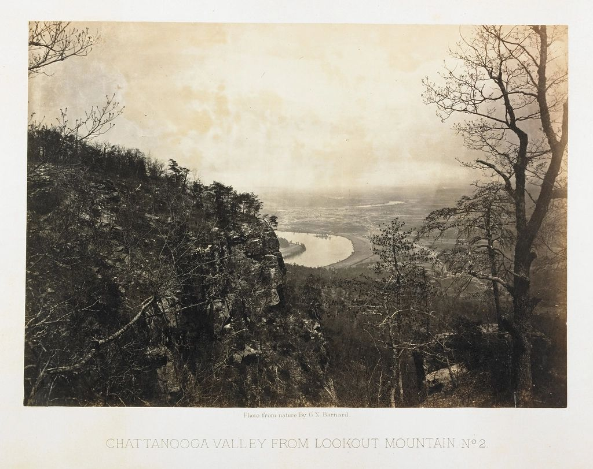

Hamilton County
Deck staining in Chattanooga, from North Shore porches to Missionary Ridge decks
Home base. We work every part of the city, and the decks change a lot from one side of the river to the other.

Older homes, older finishes
In North Shore, Highland Park, St. Elmo and Riverview, a lot of the porches and back decks have been painted or solid-stained more than once. Layers like that trap water and peel in sheets. Another coat on top won't hold. We strip it back to wood the right way and start the finish over, or we tell you honestly when a board needs replacing first.
Ridge decks get the weather first
Up on Missionary Ridge and the bluffs, decks sit high and catch full afternoon sun and wind. The finish on the floor and the top rail goes first. Those decks usually need a maintenance coat sooner than one tucked into a shady backyard downtown.
River-bottom humidity
Low ground near the river and creeks stays damp. You'll see green on the north side of the boards and black spots under planters. We wash that out gently, kill the mildew, and let the wood dry before any stain goes on.
Best time to book in Chattanooga
Same as the rest of the area: September and October are the sweet spot. The driest months here on average are October (3.59 in.) and August (3.67 in.)NOAA. Fall dates fill first, so get your photos in early. Why fall works best.
Local question
Asked in Chattanooga
Do you work on the small porches and decks in the older Chattanooga neighborhoods?
Yes. Small jobs are welcome. There's a minimum job price, but a 10×12 porch floor is right in our wheelhouse, and those often need stripping more than size.
Ready when you are